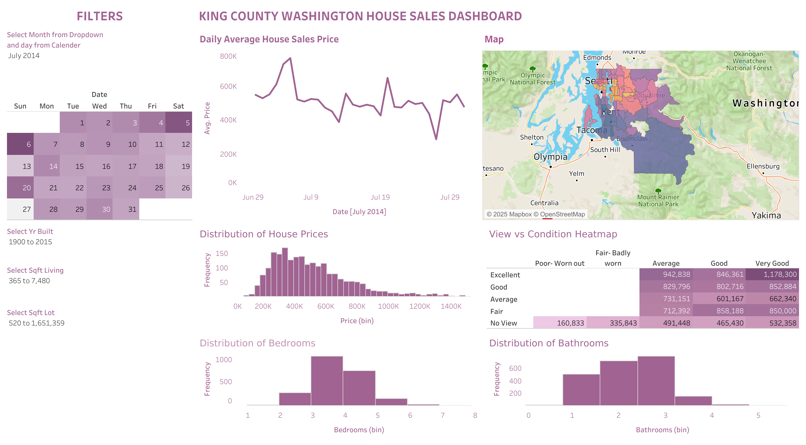
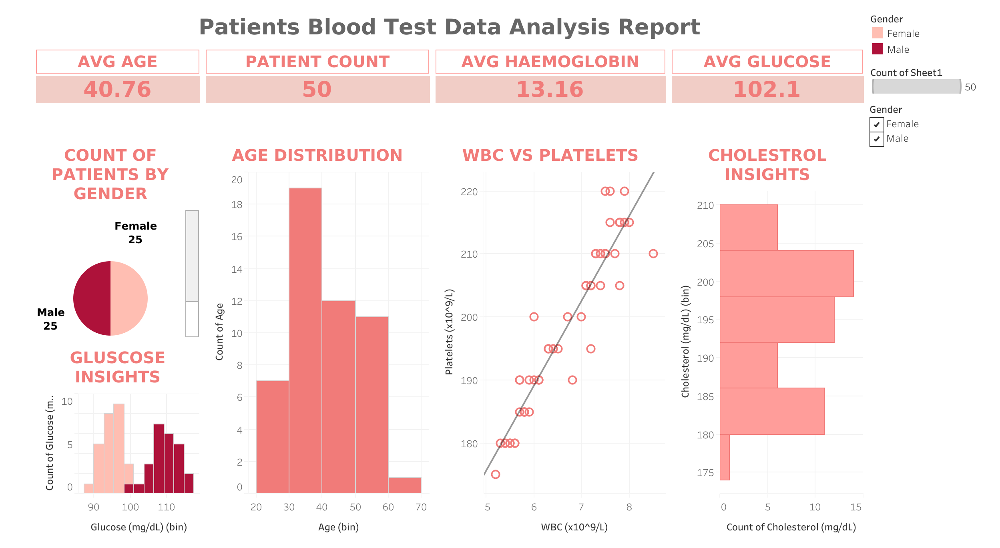
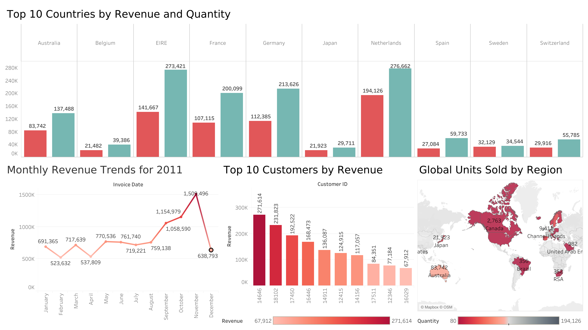
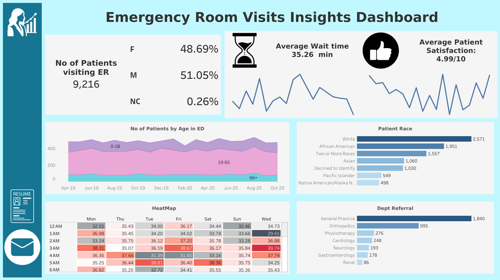
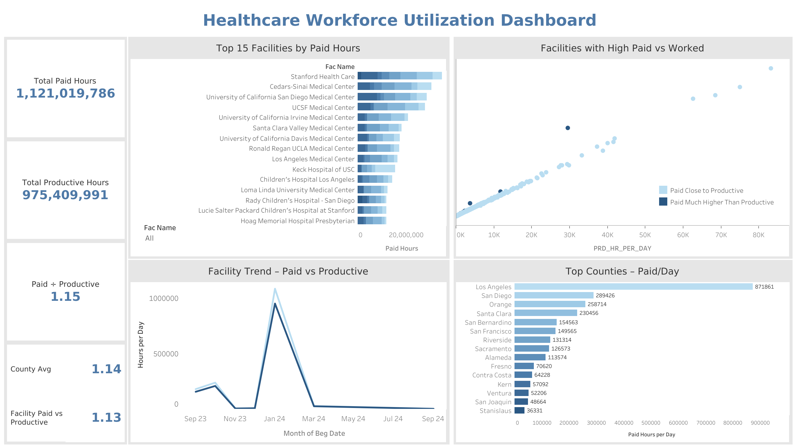

Featured Tableau dashboards with business questions and insights.

King County House Sales
Tools: Tableau, Excel
Analyzes 20,000+ home sales to compare pricing and activity across zip codes, home features, and price bands.
Live Dashboard

Patient Blood Test Data Analysis
Tools: Tableau, Excel
Analyzes patient blood test results to identify health patterns, abnormal values, and potential risk indicators..
Live Dashboard

Global Product Demand Analysis
Tools: Tableau, Excel, SQL
Explores demand trends by region and category to highlight top performers and market patterns.
Live Dashboard

Emergency Room Visits Dashboard
Tools: Tableau, Excel, SQL
Highlights ER visit patterns across time and patient segments to identify peak volume and common drivers.
Live Dashboard

Healthcare Workforce Utilization Dashbaord
Tools: Tableau, Excel, SQL
Analyzes healthcare workforce utilization by comparing paid and productive hours across hospitals, counties, and time.
Live Dashboard